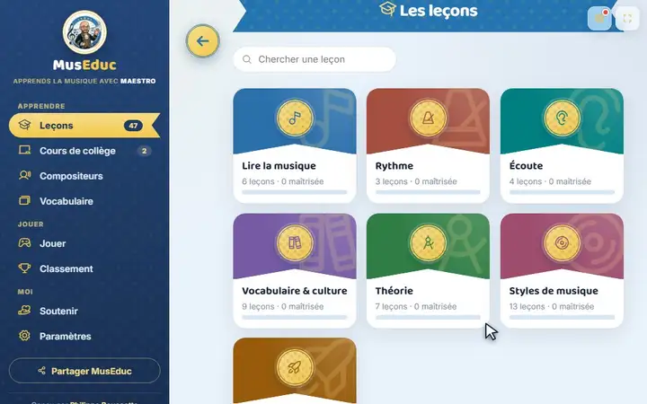
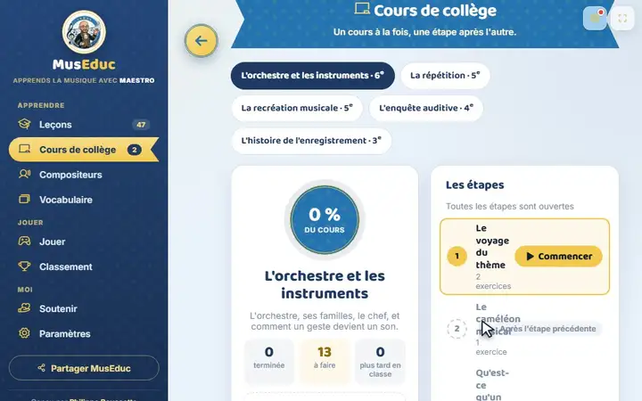
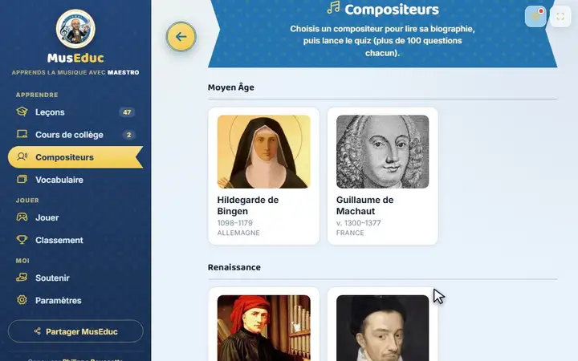
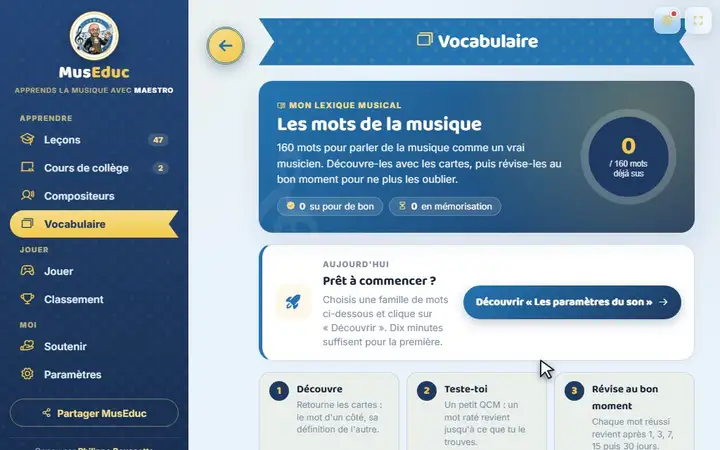
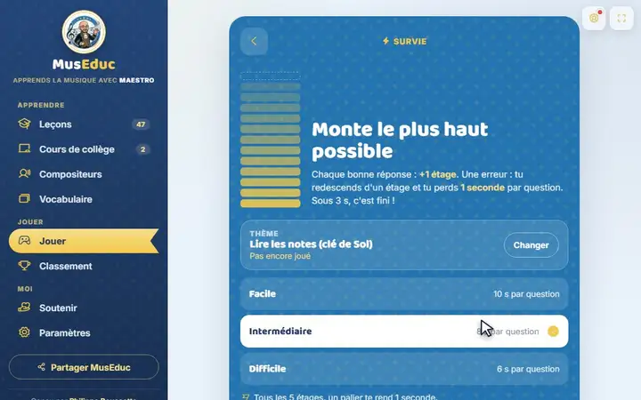
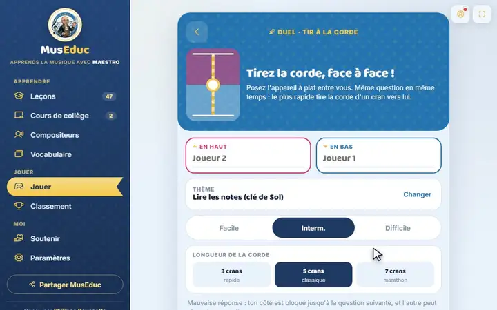
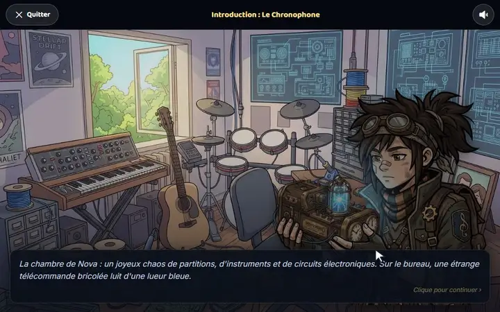

Leçons
Une leçon, puis on s'entraîne
L'élève lit une leçon illustrée, puis répond aux exercices : la correction s'affiche aussitôt, et chaque niveau réussi débloque le suivant.
Vos élèves apprennent en jouant : leçons, quiz, chant, vocabulaire, cours interactifs. Vous suivez chacun et relevez les notes d'un coup d'œil, sans jamais exposer un seul nom d'élève.
Gratuit · rien à installer · fonctionne sur ordinateur et tablette
Ces petites vidéos sont enregistrées dans l'application elle-même : ce que vous voyez, c'est exactement ce que vos élèves auront sous les yeux.

L'élève lit une leçon illustrée, puis répond aux exercices : la correction s'affiche aussitôt, et chaque niveau réussi débloque le suivant.

Chaque étape mêle explications, écoutes et exercices corrigés. L'élève avance à son rythme ; vous voyez où il en est.

Bach, Mozart, Beethoven… et aussi John Williams, Hans Zimmer ou Ed Sheeran : une biographie illustrée, des écoutes et un quiz pour chacun.

Le mot d'un côté, sa définition de l'autre ; puis un petit test et des révisions espacées pour ne plus oublier.

Chaque bonne réponse fait monter d'un étage, chaque erreur fait redescendre : on rejoue pour battre son record.

Deux élèves face à face sur la même tablette : le plus rapide à trouver la bonne réponse tire la corde vers lui.

Une histoire illustrée dont l'élève est le héros : un voyage dans le temps à la rencontre des grands compositeurs.
Faites défiler : voici comment se passe un quiz de classe, du lancement à la note.
Un code s'affiche au tableau. Vos élèves le tapent sur leur tablette ou leur ordinateur et rejoignent la partie, sans compte ni adresse e-mail.
La même question pour tous, un compte à rebours, et les réponses de la classe qui s'affichent en direct, sans aucun nom d'élève au tableau.
Chaque élève voit sa correction. Vous retrouvez les résultats dans vos carnets de notes, prêts à être reportés dans Pronote.
Sur nos serveurs, vos élèves ne sont que des codes. Leurs noms ne quittent jamais votre ordinateur, et vous pouvez tout sauvegarder dans un simple fichier.
Moins de logistique, plus de temps pour votre classe.
Qui a fait quoi, combien de temps, combien d'essais : tout est mesuré, et les notes sont réunies dans vos carnets.
Du travail pour une classe entière ou quelques élèves, avec une échéance et une validation automatique.
Moyennes, notes bonus et appréciations se reportent facilement dans votre logiciel de vie scolaire.
Vos élèves peuvent être au travail dès cette semaine.
Une adresse e-mail, un mot de passe : votre espace enseignant est prêt.
Distribuez les codes anonymes : vos élèves se connectent en un instant.
Ils apprennent en s'amusant ; vous suivez les progrès et relevez les notes.
MusEduc est aujourd'hui gratuit et sans publicité.
Le projet vit aussi grâce à vos dons : soutenir MusEduc.
Non. Vous générez des codes anonymes et vos élèves rejoignent la classe avec. Aucune adresse e-mail ni donnée personnelle n'est demandée.
Uniquement sur votre appareil. Le serveur ne stocke que des codes. C'est pour cela que la sauvegarde est importante : elle met ces noms à l'abri dans un fichier que vous gardez.
Non, tout fonctionne dans le navigateur, sur ordinateur comme sur tablette. Vous ouvrez museduc.fr, c'est tout.
Oui, MusEduc est aujourd'hui gratuit et sans publicité. Des options avancées pourront devenir payantes à l'avenir.
Oui. Un bouton exporte l'ensemble de vos données dans un fichier, que vous pouvez restaurer sur un autre ordinateur quand vous voulez.
Créez votre espace enseignant en quelques minutes et lancez votre première activité cette semaine.
Créer mon espace enseignant